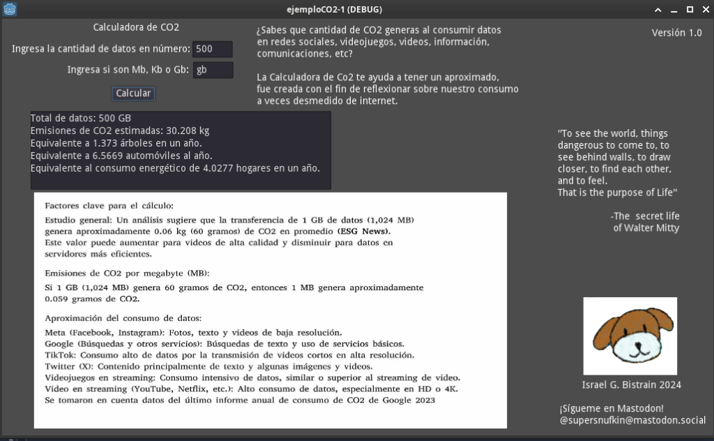

Introducción
El avance reciente de las tecnologías ha permitido que su alcance sea cada vez más sencillo, los hábitos de consumo han formado parte de una apreciación cultural en la que los usuarios de internet participan todos los días. Es por lo anterior que el mismo consumo parece crear un velo y generar un ruido volviéndonos casi incapaces de escuchar de donde viene así como sus detalles.
Preocupaciones
La huella de carbono digital se refiere a la cantidad de emisiones de dióxido de carbono (CO₂) generadas por nuestras actividades en línea. Esta emisión es el resultado del consumo de energía requerido para almacenar, procesar y transmitir datos en servidores, dispositivos y redes de telecomunicación. Estudios recientes estiman que el sector de las tecnologías de la información y la comunicación (TIC) contribuye aproximadamente con el 3% de las emisiones globales de gases de efecto invernadero, y este porcentaje sigue aumentando con el crecimiento de servicios como el streaming de video, el gaming online y el uso de redes sociales (Jones, 2021).
Lo anterior se puede leer con preocupación ya que el alcance a nuevas tecnologías como las inteligencias artificiales con modelos conversacionales, fomenta su uso desmedido y se encuentra más cerca de los propios usuarios de internet.
Recientes actualizaciones de aplicaciones conocidas como WhatsApp implementan dentro de sí mismas IA’s conversacionales, las cuales consumen una gran cantidad de datos y almacenan otros tantos utilizando el propio servicio como una herramienta de supervisión por encima de la privacidad.
Con la finalidad de proporcionar una herramienta práctica para evaluar el impacto de nuestros datos digitales, el presente proyecto utiliza el motor de desarrollo Godot 3 y su lenguaje nativo, GDScript, para calcular las emisiones de CO₂ en función del consumo de datos. La herramienta permite introducir una cantidad de datos en kilobytes (KB), megabytes (MB) o gigabytes (GB) y proporciona el equivalente de emisiones en kilogramos de CO₂.
Esta conversión se basa en investigaciones recientes que estiman que cada MB de datos consume entre 0.02 y 0.06 gramos de CO₂, dependiendo de factores como la eficiencia energética de los centros de datos y el tipo de actividad digital (Andrae, 2020).
Espero que el uso de ésta herramienta permita a los usuarios de internet detenerse un momento a reflexionar sobre el impacto al medio ambiente y su participación en la suma total referente a la huella de carbono digital global.
Desarrollo del programa
Decidí utilizar el programa de código abierto Godot en su versión 3 debido a que permite el desarrollo de una interfaz gráfica equilibrada al código, si bien está pensado para la creación de videojuegos, no limita las posibilidades de su uso.
Este programa utiliza una interfaz gráfica sencilla que permite al usuario introducir una cantidad de datos en diferentes unidades de medida y recibir el cálculo de emisiones correspondiente. A su vez, el programa convierte las emisiones en comparaciones prácticas, tales como el equivalente en número de árboles necesarios para absorber la misma cantidad de CO₂ o la cantidad de automóviles y hogares que generarían emisiones similares.
La huella de Carbono de las Redes Sociales
La relación entre el uso de redes sociales y el cambio climático ha captado la atención de investigadores debido a la magnitud de emisiones de CO₂ que genera el consumo masivo de datos. Servicios como Google y Meta (Facebook, Instagram y Whatsapp) generan enormes cantidades de emisiones debido a sus grandes bases de usuarios y el volumen de datos transmitidos cada día. De acuerdo con estudios, el uso diario de servicios digitales como los de Google representa cerca de 0.6 millones de toneladas de CO₂ al día, mientras que Meta emite unas 200 mil toneladas diarias. Estas emisiones se derivan principalmente del consumo de energía en sus centros de datos y el proceso de transmisión de grandes volúmenes de datos (Jones, 2021).
Cada usuario de Google puede emitir alrededor de 7 gramos de CO₂ al día por sus actividades en servicios como búsquedas, almacenamiento en la nube y uso de YouTube. En redes sociales, el impacto es similar. Por ejemplo, cada usuario de Facebook y otros servicios de Meta contribuye con un promedio de 6 gramos de CO₂ por día, considerando actividades comunes como subir fotos, reproducir videos y usar mensajería (Andrae, 2020). Si bien estas cifras pueden parecer pequeñas, el uso diario a gran escala y en todo el mundo convierte estos gramos de CO₂ en toneladas diarias.
Arquitectura del código
El código del programa se estructura en varias funciones principales:
Conversión de Unidades: Permite al usuario introducir datos en KB, MB o GB. La función convierte todos los datos a MB para simplificar los cálculos de emisión.
Cálculo de Emisiones: Multiplica la cantidad de MB por el factor de emisión (0.059 gramos de CO₂/MB) y convierte el resultado a kilogramos de CO₂.
Comparaciones: Genera comparaciones significativas en términos de árboles necesarios para absorber las emisiones, autos y consumo energético residencial.
Además, se incluye una función personalizada para redondear los resultados a cuatro decimales, lo cual garantiza que la información mostrada sea precisa y fácil de entender para el usuario.
Conclusión
Este programa es una herramienta educativa que busca concientizar sobre la huella de carbono digital y motivar a los usuarios a reducir su consumo de datos. Gracias a las comparaciones prácticas, el usuario puede relacionar sus actividades en línea con su impacto en el medio ambiente y tomar decisiones más sostenibles, como reducir el tiempo de transmisión de vídeos o la cantidad de almacenamiento en la nube.
Algunas recomendaciones para disminuir el impacto ambiental incluyen el uso de dispositivos de menor consumo energético, la desactivación de funciones de reproducción automática en redes sociales y la preferencia por fuentes de energía renovable cuando sea posible (Smil, 2017). La conciencia sobre el impacto de nuestras actividades digitales es un paso fundamental hacia un consumo más responsable y una reducción significativa de nuestra huella de carbono.
Personalmente recomiendo utilizar alternativas sostenibles de código abierto que no sólo son amables con el medio ambiente sino con la soberanía digital y privacidad del usuario.
Referecias y sitios de interés
Andrae, A. S. (2020). New Perspectives on the Energy Impact of the Digital Society. Sustainability, 12(18), 1-14. https://doi.org/10.3390/su12185214
Bawden, D., & Robinson, L. (2008). Digital Literacy. Nueva York: Routledge.
Jones, N. (2021). How to Stop Data Centres from Gobbling Up the World’s Electricity. Nature, 561(7722), 163-166. https://doi.org/10.1038/d41586-018-06610-y
Smil, V. (2017). Energy and Civilization: A History. Cambridge, MA: MIT Press.
Instituto Nacional de Estadística y Geografía (INEGI). (2023). Consumo de energía y emisiones de CO₂. https://www.inegi.org.mx
Google Enviromental Report (2023). https://sustainability.google/reports/google-2023-environmental-report/
Descargas
El programa se puede descargar desde mi portal de GitHub así como desde mi página oficial, dejo los enlaces a continuación también como los medios para contactarme.
GitHub y descarga del proyecto Si lo deseas puedes usar la calculadora en línea desde aquí. Gracias por leer
Por: Israel G. Bistrain 2025
Si lo deseas puedes seguirme en Mastodon:
@supersnufkin@mastodon.social